Cigar Log: Oliva Serie G (5)
I can't believe this is the fifth Oliva G here. This one is slightly different than what I previously had. That's take a look.
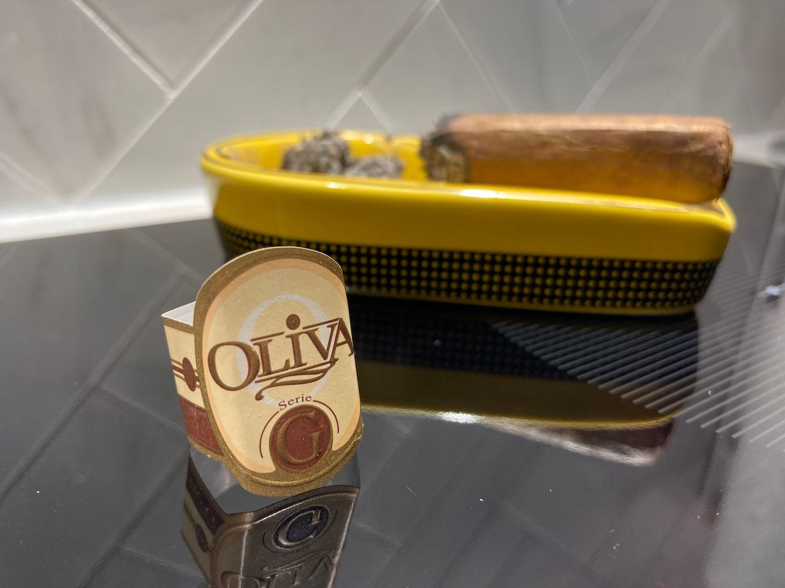
I noticed for this particular stick along with the other two Oliva G's that I bought a few weeks ago, feels really moist when I took them out of the cellophane. They had this really sharp young cigar smell from the wrapper. Quite sus and definitely not good. 🕵
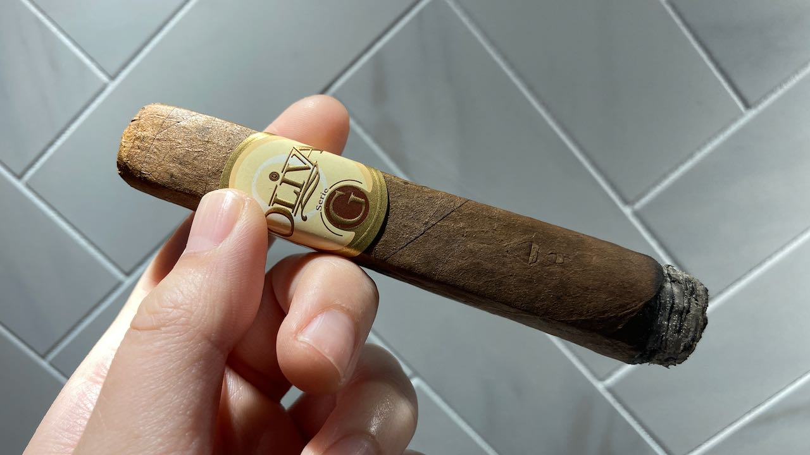 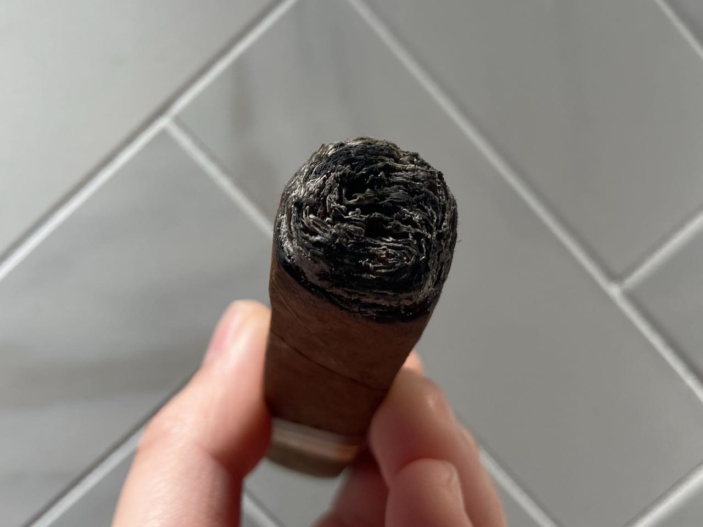
Here I can quickly show you the wet-dry line too. I'm not sure what caused it, but it definitely doesn't look right.
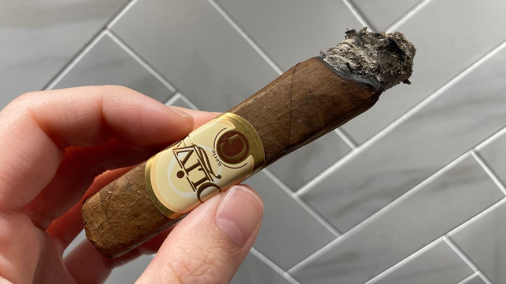 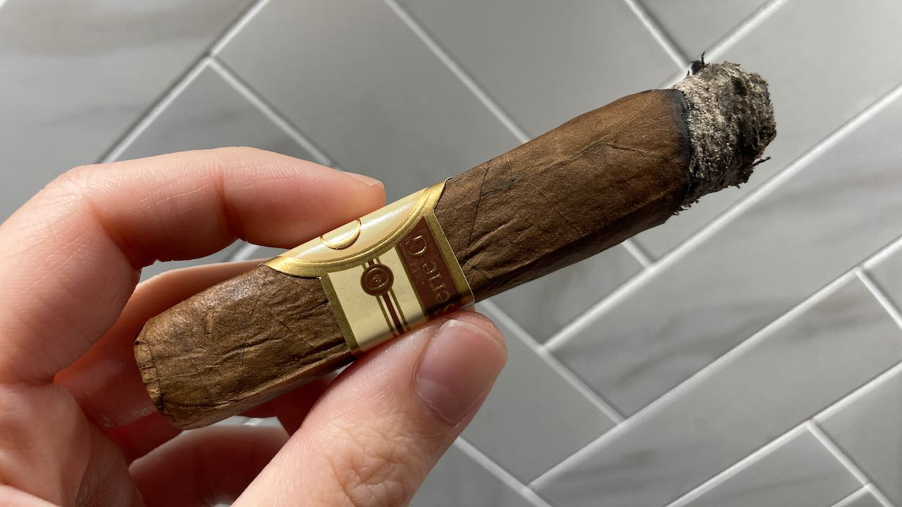 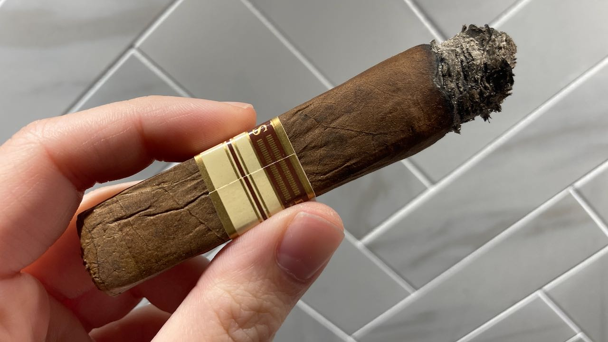
Contrary to the Oliva G's that I had in the past, this wrapper was just too loose that it couldn't hold the burn well. The burn line was crooked and ugly that I had to constantly fix it all the time. It wouldn't correct itself like it used to. Wait, this kinda reminds me about Rocky Patel Vintage 1992. It's exactly a similar burn issue.
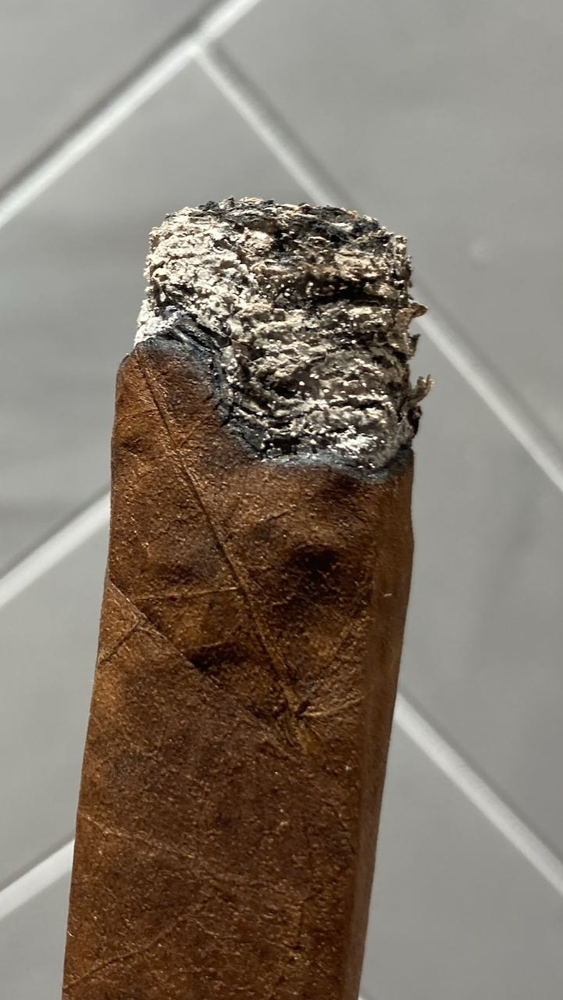 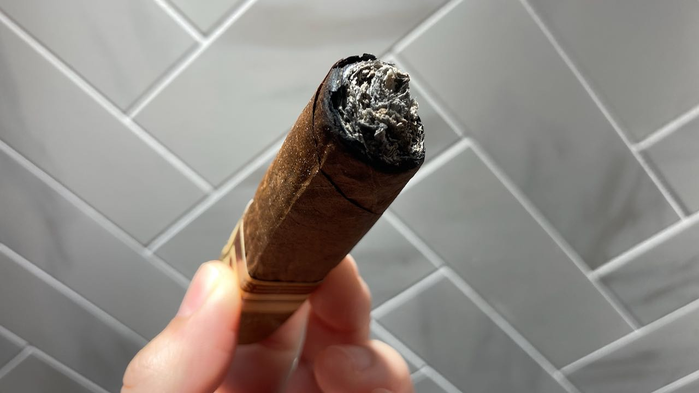 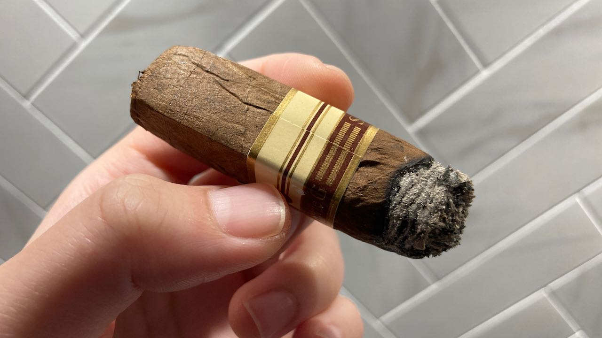
Other than the burn issue, this particular stick just generate so much smoke that I think it breathe out more smoke on the head than from the tail. It was kinda frustrating. All these two issue just keep happening continuously all the way till the end.
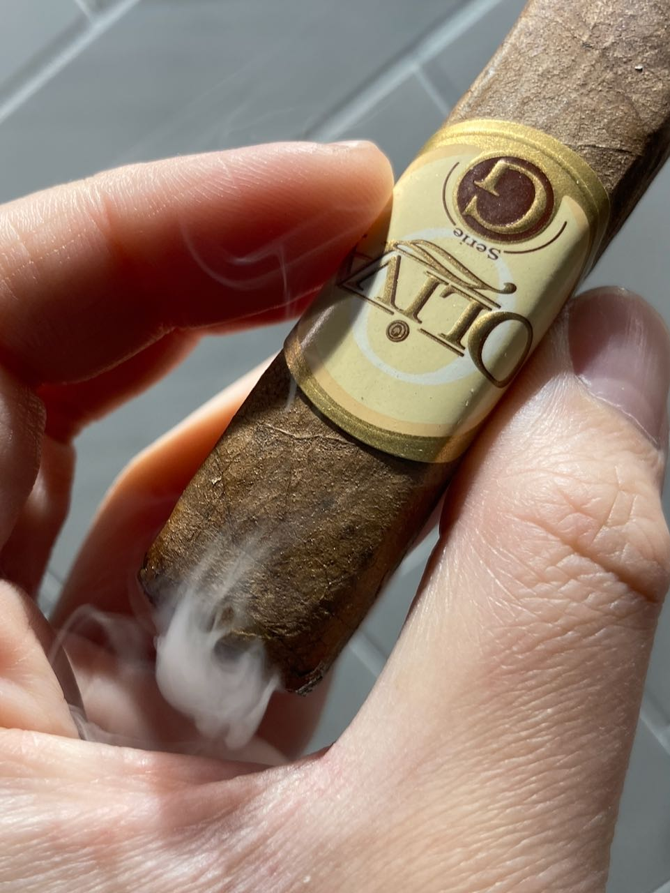 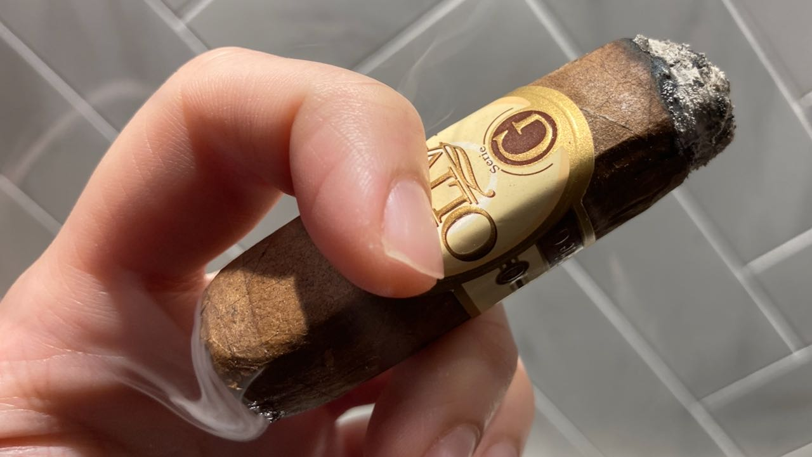 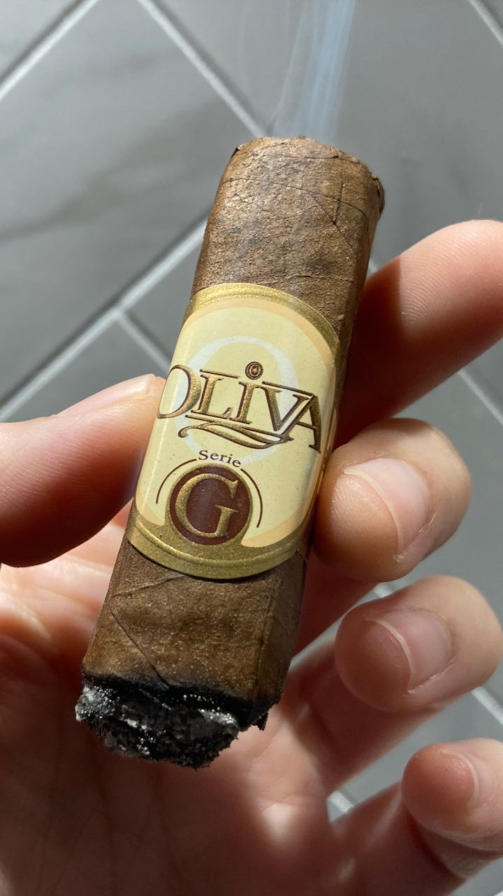
And because the wrapper is so detached, you can see that the line where it sort of expanded to. Now I should note that when I first picked this one up, it was a bit too wet so I dried it out and let it sat in a 65% RH environment. Maybe it is too dry and I needed to stay 69%. Either way, this particular did not work out well for me.
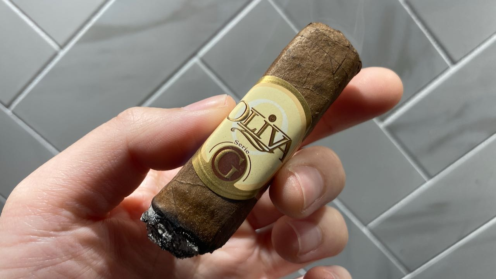
What worked though, was that I tried out this CIGARLOONG ashtray that I bought the other day. It was a bit tight, but it indeed hold the ash somewhat well. It is also easy to dump the ash and clean after. But with that being said, this is the first Oliva G that I couldn't continue past the band.
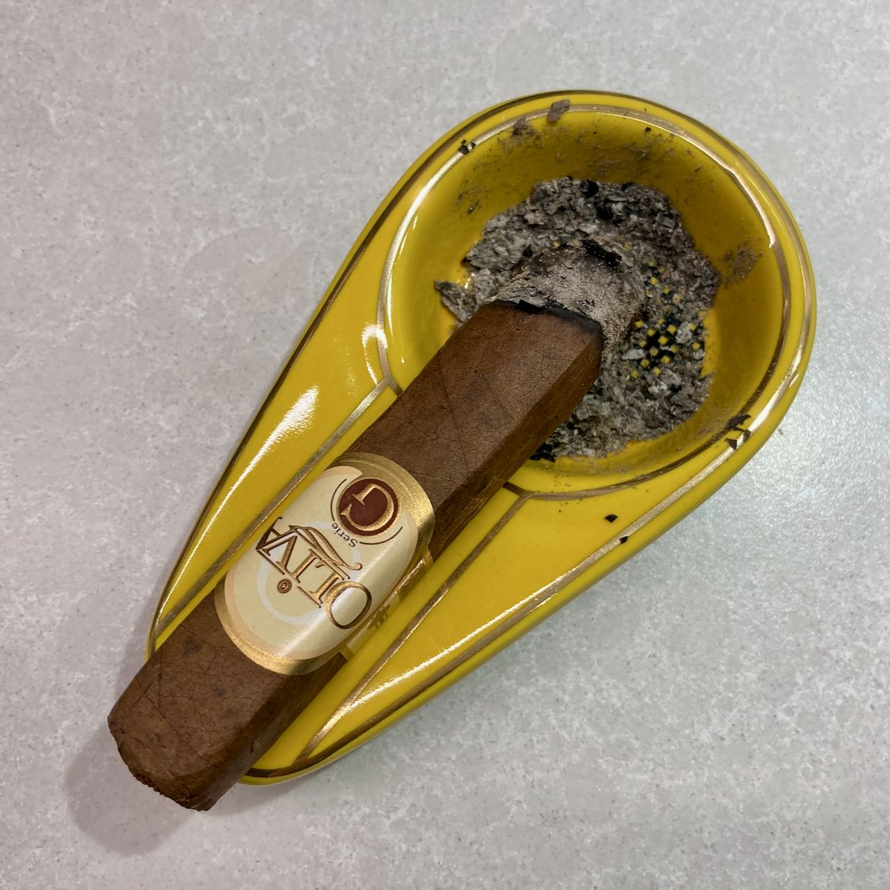 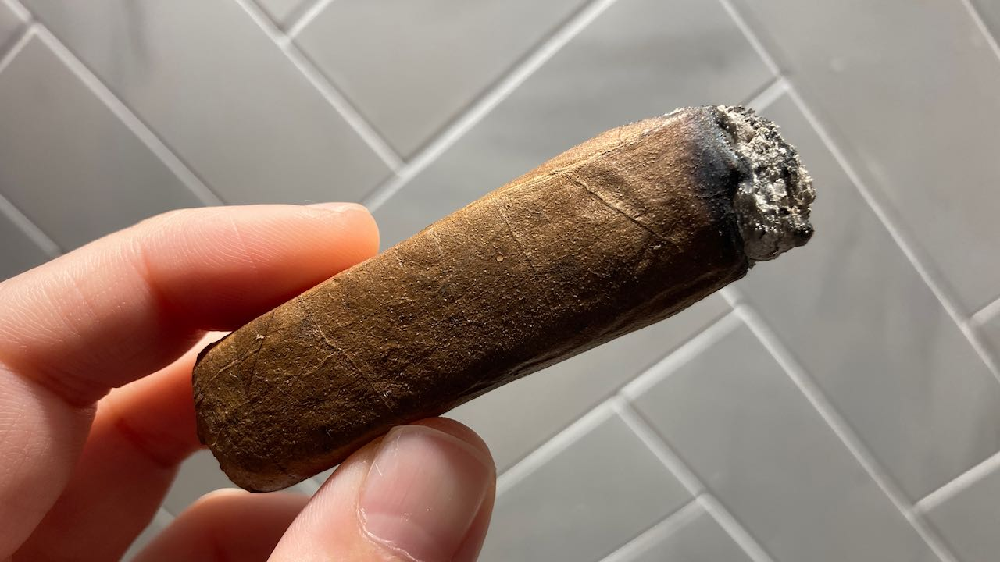
Even though I didn't finish it completely, this session still lasted for around 40 minutes because I had to constantly put it down to prevent overheating. I will have to examine the condition more carefully in the future before I take them to the counter.
Anyways, if you think I deserve a better cigar, please consider supporting this website for more cigar reviews like this. If not, hey, I still appreciate you very much for hanging around! Thanks for reading and I'll see you in my next post! 🤎